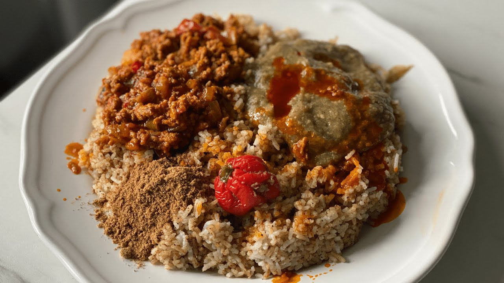

lafidi

Description
You are in a rush? Starving and need a quick and healthy meal! Try this Fish sauce accompanied with rice with okras, very quick to do. It is adapted from our traditional dish Lafidi of Mandingo. This recipe is for modern women who work hard all day long and have to feed their family. It’s always the simplest, the best!
Ingredients
- 400 g (3 to 4) smoked fish fillets (mackerel or bonga)
- 50 g dried shrimps
- 50 g fresh tomatoes or peeled
- 2 onions
- 3 cloves of garlic
- 20 g okra powder (optional)
- 20 g of soumbara
- 2 Maggi cubes
- 1 piment entier frais (facultatif)
- fresh scotch bonnet (optional)
- 8 leave of basil or 3 spring onions
- Salt and chilli powder (according to your taste)
- 1 glass of palm oil (or either gii or cow butter)
- 4 cups of brown rice or yellow rice (similar to Guinean rice)
- 6 to 8 fresh okras
- 1 to 2 diakatou or small aubergines
Directions
- Once peeled and washed mix the following ingredients together: Fish, onions, garlic, tomatoes, shrimps, spring onions and basil.
- Heat the palm oil for a minute and pour in the mixture
- With a wooden spoon stir often to avoid sticking, add a bit of water (250ml of water) to allow ingredients to cook well.
- Season with the soumbara, crushed cubes, salt, chilly powder, and add the okra powder last.
- Cover, reduce the heat and leave it to simmer for about 10 minutes.
- Cook the rice at the same time
- The okras, aubergines and scotch bonnet pepper are cooked either separately or with the rice.
- Once the okras are cooked and the rice is ready, mash the okras and mix it with the rice. This step is essential to fully enjoy the flavour of the lafidi with the rice.
- In a large dish or bowl, serve the sauce on the rice mixed with okra and pour over the peppers and the fresh diakatou.
- I will recommend to eat with your hand to fully enjoy the lafidi….Enjoy your meal!